Document type: Solution Architecture & Shipping Master
Product: Enterprise ERP Platform (ConnectPlus-aligned portfolio)
Baseline: Architecture Lock v1.1 · ADR-001 · ADR-002
Classification: Internal — Confidential
Audience: Engineering, Architecture, DevOps, Product
This is the master architecture document for the full ERP portfolio. It consolidates system design, current locked technology stack, module features and flows, Mermaid architecture diagrams, and shipping strategies for on-premise and AWS. Calendar timelines and month-based phase dates are intentionally omitted.
The Enterprise ERP Platform is a modular monolith ERP ecosystem covering foundation platform services and twenty-plus business domains — Finance, CRM, Sales, Procurement, Inventory, Manufacturing, Quality, HR, Payroll, Projects, Assets, Service, Helpdesk, Documents, GRC, Analytics, Integration, Ecommerce, Portal, Marketing, and employee self-service — with roadmap extensions for AI Assistant / Virtual E.A., Licensing, and Backup & DR.
Every module shares:
/api/v1) Central decisions (locked):
| Decision | Choice |
|---|---|
| Architecture | Modular monolith · Clean Architecture · DDD (ADR-001) |
| Backend | Python 3.13+ · FastAPI · SQLAlchemy 2 · Alembic · Pydantic v2 · Celery (ADR-002) |
| Frontend | Next.js 16+ · TypeScript · Tailwind · ShadCN · Zod |
| OLTP | PostgreSQL |
| Cache / broker | Redis · RabbitMQ |
| Search / objects | OpenSearch · MinIO or AWS S3 |
| Deploy artifact | Docker images (API, worker, beat, web, employee-app) |
| Cloud primary | AWS (EKS/ECS, RDS, S3, ElastiCache, OpenSearch) |
| On-prem | Same containers · Compose / K3s / customer Kubernetes |
SaaS (cloud or private datacenter) and on-premise share one codebase and one image pipeline; configuration and infrastructure topology differ by destination.
Figure 1
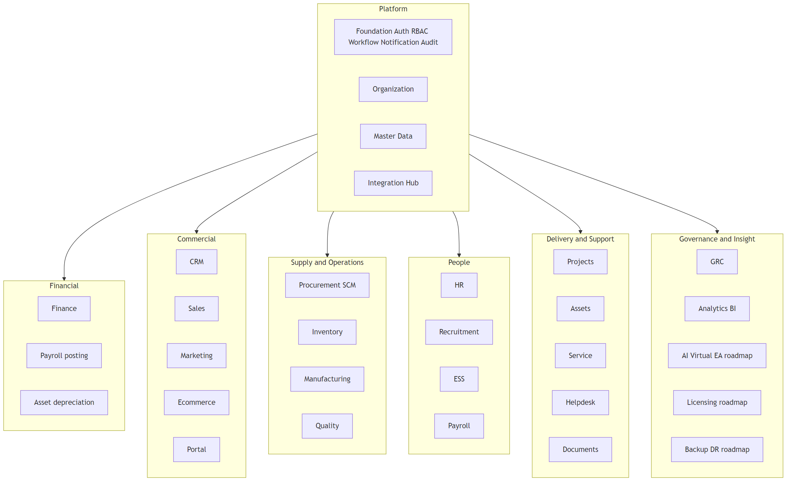
| Domain | Modules | Shared core entities |
|---|---|---|
| Platform | Foundation, Email/Notifications, Organization, Master Data, Integration Hub | Tenant, user, role, company, branch, employee/customer/vendor/product masters |
| Financial | Finance, Payroll (GL side), Assets (depreciation) | COA, journal, period, cost center, tax, currency |
| Commercial | CRM, Sales, Marketing, Ecommerce, Portal | Account, lead, opportunity, order, invoice, campaign |
| Supply | Procurement, Inventory, Manufacturing, Quality, SCM (ops) | Item, vendor, UoM, BOM, WO, inspection, GRN |
| People | HR, Recruitment, ESS, Payroll | Employee, attendance, leave, salary structure |
| Delivery | Projects, Assets, Service, Helpdesk, DMS | Project, asset, ticket, document, SLA |
| Insight | Analytics, GRC, AI/EA (roadmap), Licensing (roadmap), Backup/DR (roadmap) | KPI, policy, risk, entitlement, backup job |
Every module must satisfy:
| Principle | Meaning |
|---|---|
| Modular monolith first | One deployable API; strict module packages; extract services only with evidence |
| Clean Architecture | Router → Service → Repository → DB; domain free of ORM |
| DDD bounded contexts | No cross-module table access; integrate via APIs / events / engines |
| API-first | Versioned REST/OpenAPI before UI |
| Multi-tenant by construction | tenant_id (and company/branch) on transactional data |
| Soft delete + audit | No physical DELETE on business tables; audit columns mandatory |
| Config over customization | Workflows, settings, custom fields — not forks |
| One artifact, many destinations | Same images for AWS, private cloud, and on-prem |
| Engines mandatory | Workflow, Notification, Audit, Integration must not be bypassed |
Forbidden without EARB/ADR: NestJS, Prisma, MongoDB as primary OLTP, business logic in routers, UI→DB access, cross-module SQL, manual production schema changes.
Figure 2
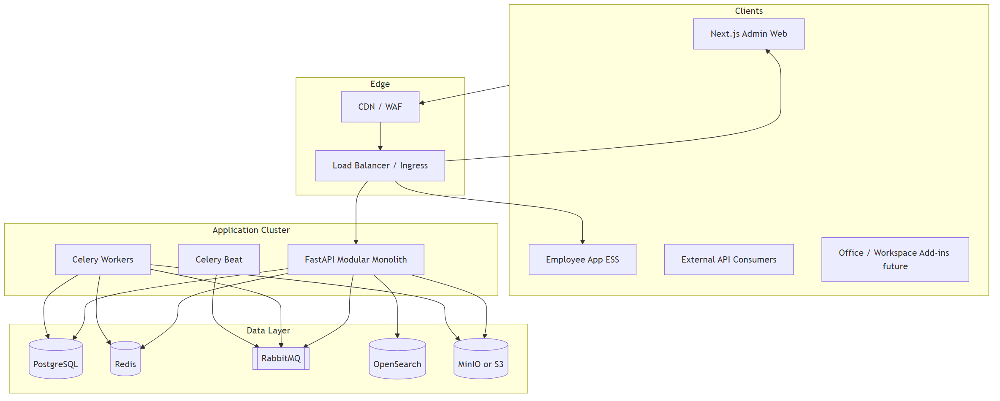
| Layer | Responsibility |
|---|---|
| Clients | Admin web, employee ESS app, integrators |
| Edge | TLS termination, WAF, rate limiting, routing |
| API | AuthN/Z, tenancy middleware, domain routers/services |
| Workers | Email delivery, async jobs, scheduled syncs |
| Data | OLTP, cache/sessions, broker, search, object storage |
Aligned with ERP Architecture Lock Report v1.1.
| Layer | Primary choice | Role |
|---|---|---|
| Frontend (admin) | Next.js 16+ · React · TypeScript · Tailwind · ShadCN · Zod | ERP admin shell and module UIs |
| Frontend (ESS) | Next.js employee-app | Employee self-service |
| Backend API | Python 3.13+ · FastAPI · Uvicorn | HTTP API modular monolith |
| Prod process mgr | Gunicorn + Uvicorn workers | Production API serving |
| ORM / migrations | SQLAlchemy 2.0 · Alembic | Infrastructure layer only |
| Validation | Pydantic v2 | Request/response schemas |
| Async jobs | Celery · Celery Beat · RabbitMQ | Notifications, scheduled work |
| Cache / sessions | Redis | Cache, RBAC cache, sessions, Celery backend |
| OLTP | PostgreSQL | Single transactional standard |
| Search | OpenSearch | Full-text / analytics indexing |
| Object storage | MinIO (on-prem/local) · AWS S3 (cloud) | Documents, exports, backups |
| Auth federation | Microsoft Entra ID (OIDC) · JWT sessions | SSO + local auth / MFA |
| Microsoft Graph adapter | Outbound notification email | |
| Containers | Docker | api, worker, beat, web, employee-app |
| Orchestration | Kubernetes Ready · Terraform Ready | Target production |
| Design system | design-system/enterprise-erp-platform/MASTER.md |
Data-dense · Swiss minimal |
enterprise-erp-platform/
├── apps/api/ # FastAPI modular monolith
├── apps/web/ # Next.js admin
├── apps/employee-app/ # Next.js ESS
├── docs/ # BRD FRD SDD DBS ERD Architecture Lock Master
├── design-system/ # UI tokens and page overrides
├── docker-compose.yml # Infra: Redis RabbitMQ MinIO OpenSearch
└── infrastructure/ # IaC growth area
foundation, organization, master_data, finance, sales, procurement, inventory, manufacturing, quality, crm, hr, ess, payroll, recruitment, project, asset, service, helpdesk, document, grc, analytics, integration, ecommerce, portal (+ marketing scaffolding).
Mandatory flow inside every module:
Router → Service → Repository → Database
Figure 3
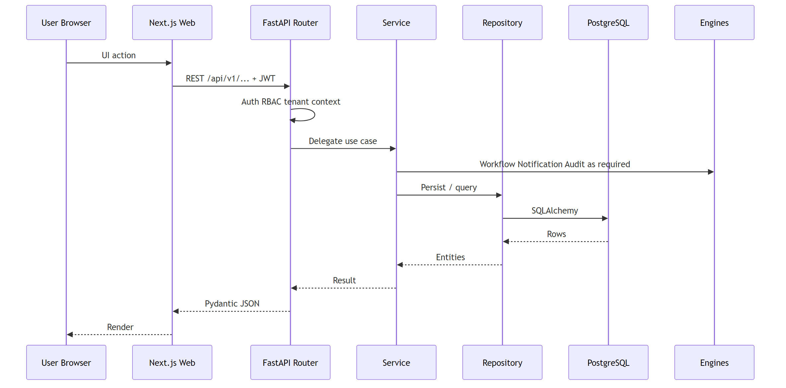
Figure 4
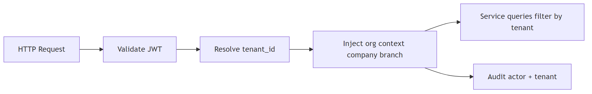
| Concern | Rule |
|---|---|
| Isolation | tenant_id on transactional tables; company/branch scoping where applicable |
| Auth | JWT access + refresh; MFA; Microsoft OAuth supported |
| AuthZ | RBAC: role → permissions; module membership; org scope |
| Secrets | Env / secret store — never commit production secrets |
| Data | Soft delete; audit columns created_at/by, updated_at/by, version |
| Transport | TLS everywhere in deployed environments |
Edge WAF/DDoS · short-lived tokens · input validation · OWASP-aligned engineering · encrypted backups · immutable audit from mutation path · ISO 27001 / SOC 2 posture for SaaS offerings.
| Store | Holds | Isolation |
|---|---|---|
| PostgreSQL | All module transactional data, masters, workflow/notification/audit | Tenant (+ company/branch) filters |
| Redis | Cache, sessions, rate limits, Celery results | Key prefixes per tenant where applicable |
| RabbitMQ | Task queues | Vhost / queue naming by env |
| OpenSearch | Search indexes | Index or filter per tenant |
| MinIO / S3 | Documents, attachments, exports, backup objects | Prefix/bucket per tenant |
Figure 5
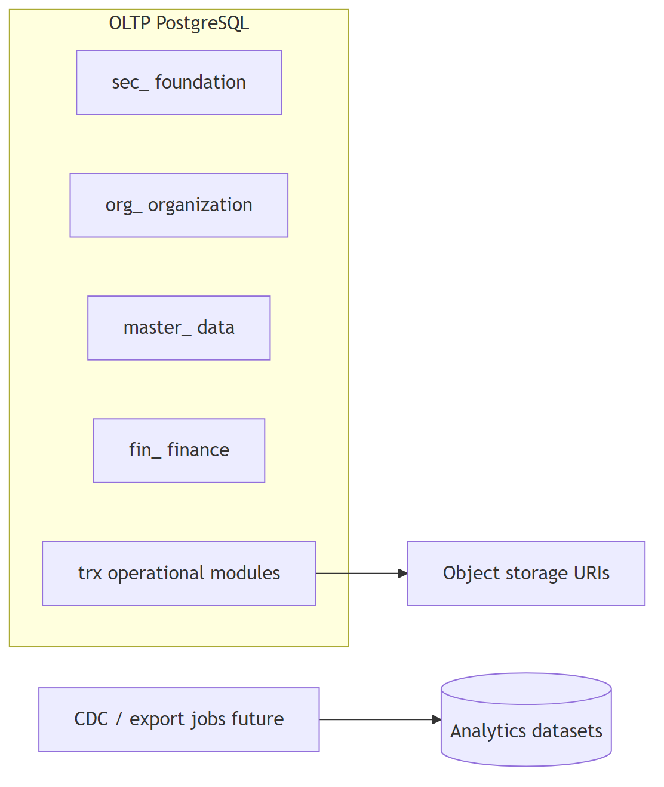
| Engine | Responsibility | Home |
|---|---|---|
| Identity & RBAC | Login, MFA, OAuth, roles, permissions, module members | Foundation |
| Workflow | Definitions, instances, approvals, escalation | Foundation |
| Notification / Email | Templates, events, deliveries, Graph send, FCM devices | Foundation + Email UI |
| Audit | Immutable mutation/event logs | Foundation |
| Integration Hub | Connectors, webhooks, sync jobs, mappings, DLQ | Integration module |
| Document service | Versioned library consumed cross-module | Document module |
| Settings | System and tenant configuration | Foundation |
Figure 6
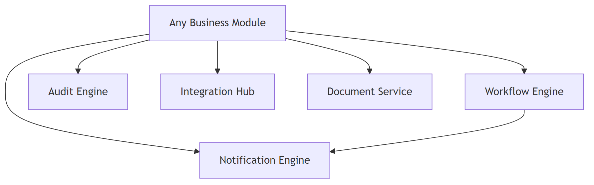
Figure 7
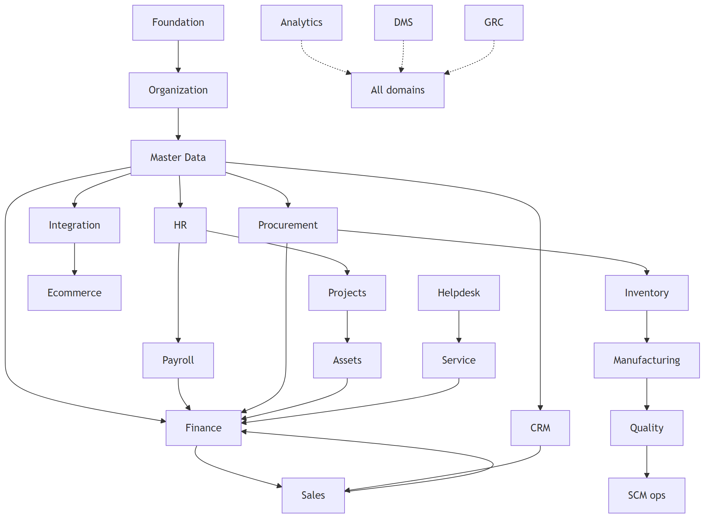
Figure 8
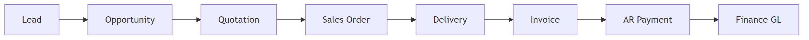
Figure 9
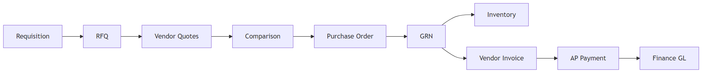
Figure 10
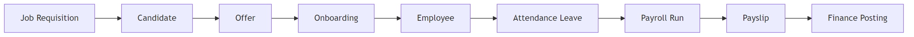
Figure 11
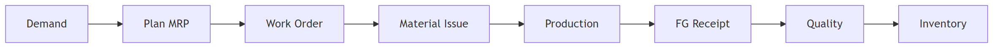
Figure 12
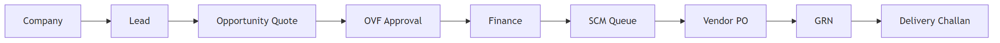
Figure 13
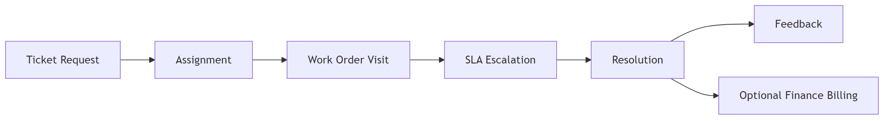
Figure 14
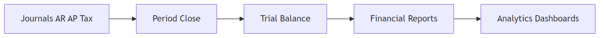
Maturity legend: Implemented · Partial · Scaffold · Roadmap.
| Web | /foundation |
| API | /tenants, /users, /roles, /permissions, /workflows/*, /audit/*, /settings, /auth/* |
| Maturity | Implemented |
Features
/me Key flows: Authenticate → session → authorized API call; submit → approve/reject/escalate workflow; every mutation audited.
| Web | /email |
| API | /notifications/*, /notifications/email/* |
| Maturity | Implemented |
Features
Key flows: Event → template render → Graph/FCM delivery → status logging.
| Web | /organization |
| API | /companies, /branches, /departments, /business-units, /locations, /cost-centers, /profit-centers, /organization/tree |
| Maturity | Implemented |
Features: Multi-company hierarchy; branches; departments; BUs; locations; cost/profit centers; org tree.
| Web | /master-data |
| API | /employees, /customers, /vendors, /products, /product-categories, /uoms, /currencies, /taxes, /assets, /warehouses |
| Maturity | Implemented |
Features: Central masters consumed by all operational modules; uniqueness and governance; no duplicate masters inside business modules.
| Web | /finance/** (custom UX) |
| API | /finance/* |
| Maturity | Implemented |
Features
Key flows: Draft journal → approve → post → GL; subledger activity → financial statements; period close.
| Web | /crm |
| API | /crm/* |
| Maturity | Implemented |
Features: Companies, leads, assignments, activities, opportunities, stages, pipelines, quotes, OVF, contacts, campaigns, interactions, tasks, follow-ups, meetings, call/email/visit logs, CSAT/feedback.
Key flows: Company → Lead → Opportunity → Quote → OVF → Won/Lost; campaign membership.
| Web | /sales |
| API | /sales/* |
| Maturity | Implemented |
Features: Price lists, discount rules, customer credit, quotations, sales orders, deliveries, invoices, returns.
Key flows: Quotation → Order → Delivery → Invoice → Payment/AR; credit holds; returns/credit notes.
| Web | /procurement |
| API | /procurement/* |
| Maturity | Implemented (advanced SCM planning Partial vs FRD-15) |
Features: SCM queue, requisitions, RFQs, vendor quotations, comparisons, POs, GRNs, delivery challan/status, vendor invoices, returns, contracts, vendor performance.
Key flows: P2P full cycle; OVF → SCM queue → PO → GRN → challan.
| Web | /inventory |
| API | /inventory/* |
| Maturity | Implemented |
Features: Stock, bins, batches, serials, reservations, transfers, adjustments, cycle counts, policies, valuation, reports.
Key flows: GRN putaway → reserve → issue/transfer → count/adjust → valuation.
| Web | /manufacturing |
| API | /manufacturing/* |
| Maturity | Implemented |
Features: BOMs, routings, work centers, machines, production orders, material issues/returns, production receipts, scrap, WIP, variances.
Key flows: Plan → WO → issue → execute → FG receipt → WIP/variance close.
| Web | /quality |
| API | /quality/* |
| Maturity | Implemented |
Features: Inspection/sampling plans, characteristics, defect types, incoming/in-process/final inspections, NCRs, CAPAs, supplier quality, complaints, audits, scores.
Key flows: Plan → inspect → release/hold; NCR → CAPA.
| Web | /hr |
| API | /hr/* |
| Maturity | Implemented |
Features: Designations, profiles, employment, shifts, holidays, leave types/balances/requests, attendance, documents, performance, goals, appraisals, training, separation.
Key flows: Hire-to-retire; leave approval; attendance → payroll handoff.
| Web | /recruitment |
| API | /recruitment/* |
| Maturity | Implemented |
Features: Requisitions, postings, sources, recruiters, candidates, applications/stages, interviews/feedback, offers, BGV, talent pools, onboarding tasks.
Key flows: Requisition → apply → interview → offer → BGV → onboard → HR employee.
| Web | Employee app (not admin registry) |
| API | /ess/* |
| Maturity | Implemented (API + employee-app) |
Features: Profile, leave, attendance corrections, on-duty/comp-off, payslips, KYC/bank, documents, assets, performance, holidays, announcements, device tokens, notifications.
| Web | /payroll |
| API | /payroll/* |
| Maturity | Implemented |
Features: Periods, salary structures/components, employee salaries, earning/deduction types, tax/statutory, runs, payslips, bonuses, reimbursements, loans, adjustments, summaries, Finance posting.
Key flows: Attendance/leave → run → approve → payslip → GL → bank file (FRD).
| Web | /projects |
| API | /projects/* |
| Maturity | Implemented |
Features: Projects, phases, milestones, tasks, timesheets, resource plans/allocations, budgets, costs, issues, risks, change requests, documents.
Key flows: Approve → plan → execute → timesheet cost → close / bill.
| Web | /assets |
| API | /assets/* |
| Maturity | Implemented |
Features: Categories, assets, components, assignments, transfers, locations, warranties, insurance, maintenance plans/work, depreciation, disposals, audits, meter readings.
Key flows: Register → assign → maintain → depreciate → dispose.
| Web | /service |
| API | /service/* |
| Maturity | Implemented |
Features: Categories, requests, tickets, assignments, schedules, work orders, tasks, visits, materials, time entries, SLAs, escalations, contracts, feedback.
Key flows: Request → assign → WO/visit → complete → feedback → optional billing.
| Web | /helpdesk |
| API | /helpdesk/* |
| Maturity | Implemented |
Features: Categories, priorities, tickets, assignments, comments, SLAs, escalations, knowledge base/articles, resolutions, support teams, shifts, schedules, feedback.
Key flows: Report → assign → resolve → CSAT; SLA breach → escalate.
| Web | /documents |
| API | /documents/* |
| Maturity | Partial / scaffold-rich (storage/OCR hardening ongoing) |
Features: Folders, documents, versions, tags, permissions, shares, approvals, workflows, templates, retention, archives, comments, checkouts, audits, attachments, reports.
Key flows: Upload → review → approve → publish; retain → archive.
| Web | /grc |
| API | /grc/* |
| Maturity | Scaffold / broad CRUD (+ dashboard) |
Features: Policies/versions/acknowledgements, controls/tests, risk categories/register/assessments/treatments, compliance frameworks/requirements/assessments, audit plans/audits/findings, corrective actions, exceptions, incidents, notifications, reports.
Key flows: Risk identify → assess → treat → control test; audit → finding → CAPA; policy lifecycle.
| Web | /analytics |
| API | /analytics/* |
| Maturity | Implemented |
Features: Dashboards, widgets, reports, schedules, datasets, metrics, KPIs, dimensions, alert rules, subscriptions, imports/exports.
Key flows: Dataset → metric/KPI → dashboard/report → schedule/alert.
| Web | /integration |
| API | /integration/* |
| Maturity | Implemented |
Features: External systems, connectors, API credentials, OAuth clients, webhooks, event definitions, message/retry/DLQ queues, mappings, sync jobs/logs, rate limits.
Key flows: Connect → map → sync; webhook ingest → retry/DLQ.
| Web | /ecommerce |
| API | /ecommerce/* |
| Maturity | Implemented |
Features: Stores, channels, listings, carts, orders, payments, shipments, return requests, coupons, promotions, marketplace connectors.
Key flows: Channel order → pay → fulfill → ERP inventory/sales sync; returns.
| Web | /portal |
| API | /portal/* |
| Maturity | Implemented |
Features: Portal accounts, profiles, sessions, dashboards, notifications, messages, order/invoice views, document access, support tickets, service requests, preferences, login audits.
Key flows: Portal login → view commercial docs → raise ticket/service.
| Web | Registry pending |
| API | /marketing/* (scaffolding) + CRM campaigns |
| Maturity | Partial / in progress |
Features: CRM campaigns; marketing FRD scope — platforms/accounts, content requests, AI/Celery generation pipeline, versions/scores, brand voice, research/trends, competitors, calendar, publish jobs (stub), analytics summary; ecommerce promos/coupons adjacent.
Key flows: Campaign → content request → generate → score → calendar → publish/approve.
These are part of the product vision and ownership scope; not yet first-class API packages.
Target features: LLM gateway; permission-aware RAG over ERP + DMS; tool-calling against OpenAPI; in-module copilots; eval/guardrails; audit of AI actions.
Figure 15
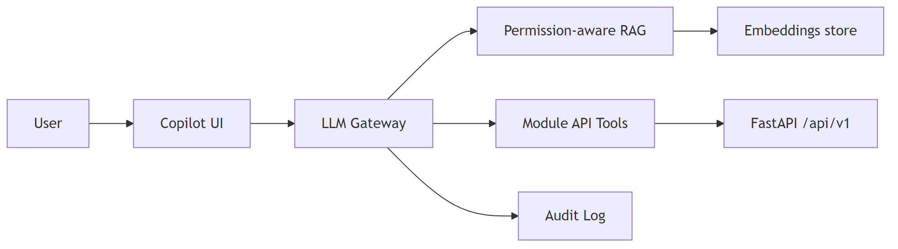
Target features: Skills/performance graph; assessments/certifications; reminders; calendar/meeting assist; email draft/summarize; proactive insights; human-in-the-loop for consequential actions; consent/transparency controls.
Target features: Module entitlements, seats, license keys, online/offline activation, metering, renewal/expiry, grace periods, license audit — required for sell-alone and on-prem.
Figure 16
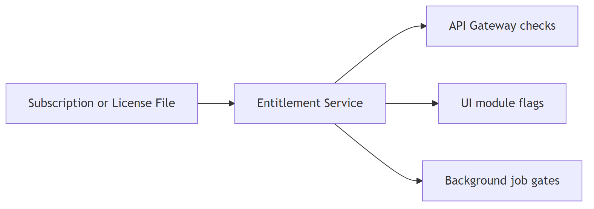
Target features: Scheduled full/incremental/WAL backups; encryption; restore verification; per-tenant PITR tooling; DR runbooks; RPO/RTO targets; alignment with GRC BCM.
Ops today: PostgreSQL external hosting, manual dumps under backups/, SDD/DBS standards — product module still roadmap.
All external connectivity prefers the Integration Hub: credential vaulting, scheduled/webhook syncs, field mapping, retries, DLQ, connector health.
| Area | Examples |
|---|---|
| Identity | Microsoft Entra ID OIDC/SCIM |
| Email / collab | Microsoft Graph mail |
| Object storage | MinIO / S3 |
| Payments / banking | Host-to-host, payment status APIs |
| Tax / e-invoice | Country packs (GST etc.) |
| Commerce | Shopify/Magento-style channels via Ecommerce module |
| Signatures | DocuSign / Adobe Sign via DMS |
| Catch-all | Public OpenAPI, outbound webhooks, CSV/Excel import-export |
Same signed container images as cloud; topology changes by customer size.
Figure 17
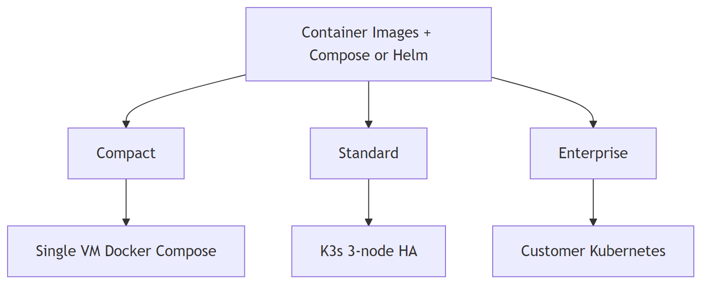
| Profile | Target | Shape |
|---|---|---|
| Compact | ≤ ~100 users | One VM/host: API, worker, beat, web, Postgres, Redis, RabbitMQ, MinIO; optional warm standby |
| Standard | ~100–1,000 users | K3s cluster; HA Postgres (Patroni or managed); replicated Redis/RabbitMQ; MinIO erasure coding |
| Enterprise | 1,000+ / regulated | Customer Kubernetes; customer-managed DB; AD/LDAP federation; air-gap capable; customer DR |
Figure 18
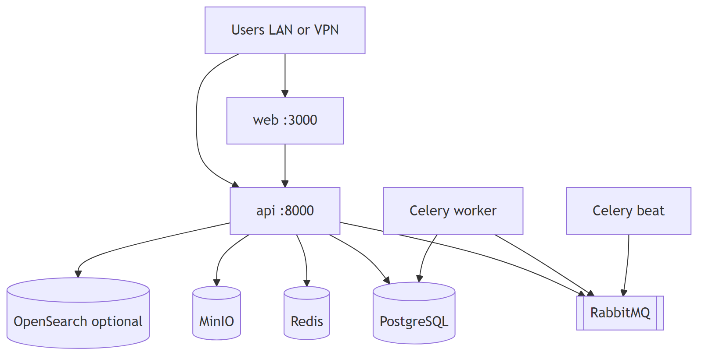
| Item | Guidance |
|---|---|
| Installer | CLI (cpctl or equivalent) validates OS, disk, ports; applies Compose/Helm; runs Alembic; health checks |
| Config | .env / sealed secrets — DB URL, JWT, Graph/SSO optional, storage endpoints |
| Licensing | Offline signed license files (roadmap entitlement service) |
| Updates | Online registry pull or offline signed bundle; pre-upgrade backup mandatory |
| AI | Customer LLM keys, vendor gateway, or local GPU inference — config only, no code fork |
| Existing artifacts | apps/api/Dockerfile (roles: api / worker / beat / migrate), apps/web/Dockerfile, apps/employee-app/Dockerfile, root docker-compose.yml (infra services) |
Primary cloud target per SDD Volume 4.
| Function | AWS service |
|---|---|
| Compute | EKS (preferred) or ECS Fargate |
| API / workers | Kubernetes Deployments or ECS services |
| Frontend | EKS/ECS + ALB, or CloudFront → S3/SSR containers |
| Database | Amazon RDS PostgreSQL (Multi-AZ) |
| Cache | ElastiCache Redis |
| Broker | Amazon MQ (RabbitMQ) or self-managed on EKS |
| Search | Amazon OpenSearch Service |
| Objects | Amazon S3 |
| Secrets | AWS Secrets Manager |
| TLS / DNS | ACM · Route 53 |
| Edge | CloudFront · AWS WAF |
| Observability | CloudWatch · OpenTelemetry · Grafana (optional) |
| IaC | Terraform |
Figure 19
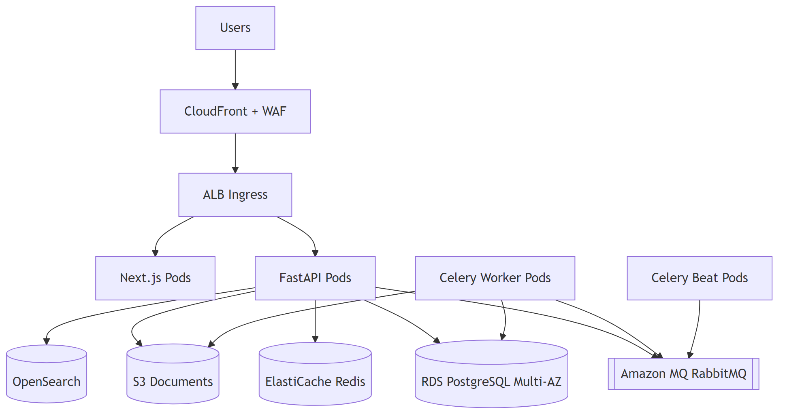
Figure 20
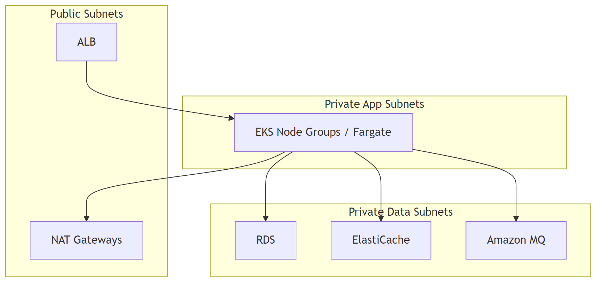
Rule: Databases and brokers are never publicly accessible.
| Workload | Image / role | Notes |
|---|---|---|
erp-web |
apps/web |
HPA on CPU/RPS |
erp-api |
apps/api role=api |
Gunicorn+Uvicorn; HPA |
erp-worker |
apps/api role=worker |
Scale on queue depth |
erp-beat |
apps/api role=beat |
Single active replica |
erp-migrate |
Job | Alembic before rollout |
erp-employee |
apps/employee-app |
Optional public path |
Ingress, ConfigMaps, Secrets, NetworkPolicies, and PodDisruptionBudgets are mandatory for production.
Figure 21
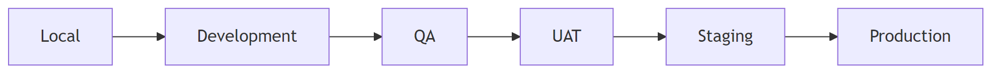
Promotion is artifact-based: the same image digests move forward; only config/secrets change.
Figure 22
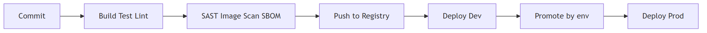
| Practice | Standard |
|---|---|
| Source | GitHub |
| Branches | main, develop, feature/* |
| CI | Build API/web images; unit/integration tests; architecture/guardrail checks |
| CD | GitOps (Argo CD) or pipeline deploy to EKS/ECS |
| Migrations | Forward-only Alembic; expand/contract; run as release Job |
| Secrets | Secrets Manager / sealed secrets — not git |
| Present | Gap |
|---|---|
| Dockerfiles for api/web/employee-app | Full-stack prod Compose/Helm not checked in |
| Infra Compose (Redis, RabbitMQ, MinIO, OpenSearch) | Postgres assumed external / platform-provided |
.env.example |
No Terraform/EKS manifests yet |
| Coolify-style env used operationally | Formalize as one of the deploy profiles |
This master document defines the target; implementation closes the IaC/CI gaps without changing ADR-001/002.
| Area | Practice |
|---|---|
| API contracts | OpenAPI; breaking changes fail review |
| Domain tests | High coverage on finance/payroll math and posting |
| Module matrix | Standalone degradation tests when licensing lands |
| E2E golden paths | O2C, P2P, hire-to-pay, record-to-report |
| Security | Auth/RBAC tests; no cross-tenant leaks |
| Telemetry | Structured logs, metrics, traces (OpenTelemetry) |
| Compliance | Audit engine; GRC module; ISO 27001 / SOC 2 target for SaaS |
| Risk | Mitigation |
|---|---|
| Scope explosion across 20+ modules | Depth before breadth; sellable increments; dependency order Foundation → Org → MDM → business |
| Tenancy / permission leak | Tenant middleware + query filters; automated cross-tenant tests; pen tests |
| Payroll / tax correctness | Country packs; domain experts; property-based tests |
| On-prem support burden | One artifact; LTS channels; installer automation; partner first-line |
| AI hallucination / unauthorized action | Grounding, citations, user-scoped tools, confirmation, full AI audit |
| Cursor/AI code drift | .cursor/rules, ADRs in-repo, human review, architecture tests |
| Backup/DR only manual today | Productize Backup & DR module; automate verify restores |
| Licensing absent | Block sell-alone GA until entitlement service ships |
BRD → FRD (Master + domain FRDs) → SDD v1.1 → DBS v1.1 → ERD → Physical Schema
→ SQLAlchemy Models → Alembic → OpenAPI → Code
| Document set | Path |
|---|---|
| BRD | docs/01_BRD/ |
| FRD | docs/02_FRD/ |
| SDD | docs/03_SDD/ |
| DBS | docs/04_DBS/ |
| Architecture Lock | docs/05_ARCHITECTURE_LOCK/ |
| ERD | docs/06_ERD/ |
| This master | docs/07_MASTER_ARCHITECTURE/ |
| Design system | design-system/enterprise-erp-platform/MASTER.md |
No deviation from Architecture Lock v1.1 without EARB approval and an updated ADR.
Primary engineer ownership for delivery prioritization:
| Concern | Location |
|---|---|
| API mount list | apps/api/src/shared/router.py |
| Web module registry | apps/web/src/config/modules.ts |
| Architecture lock | docs/05_ARCHITECTURE_LOCK/ERP_Architecture_Lock_Report_v1.1.md |
| Infra Compose | docker-compose.yml |
| API container entry | apps/api/docker/entrypoint.sh |
End of Master Architecture Document